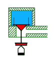

Na
fotografii je zachycen fragment vnitøku rejstøíkové kancely s nìkolika
kuelkovımi ventily, které zakrıvají vstupní otvory kanálkù k píšalám
jednoho hlasu varhan.
Na
fotografii je zachycen fragment vnitøku rejstøíkové kancely s nìkolika
kuelkovımi ventily, které zakrıvají vstupní otvory kanálkù k píšalám
jednoho hlasu varhan.Kuelková vzdušnice je jednou z konstrukèních variant vzdušnic s rejstøíkovımi kancelami. Svùj název dostala od podoby ventilù – ty jsou tvoøeny tìlískem ve tvaru obráceného kuele. U této vzdušnice má kadá píšala (s vıjimkou vícesborovıch hlasù, napø. mixtur) svùj ventil, ventilù je tedy ve vzdušnici tolik, kolik je rejstøíkù krát poèet tónù na klaviatuøe. Pøestoe má tento typ vzdušnice podstatnì více souèástek, ne napø. klasická zásuvková vzdušnice, øadí se mezi velmi robustní a provoznì spolehlivé. U této vzdušnice, stejnì jako u všech ostatních s rejstøíkovımi kancelami, se rozdìlování vzduchu jednotlivım rejstøíkùm dìje pomocí otevøení rejstøíkového ventilu, kterı ovládá jeho pøítok do podélného kanálu pøes celou délku vzdušnice. Tato èást cesty vzduchu je u této i všech dalších variant vzdušnic s podélnou konstrukcí shodná (lišit se mùe jen konkrétní konstrukce ventilu, viz úvodní kapitola o vzdušnicích s rejstøíkovımi kancelami). Aby vzdušnice mohla plnit i svou druhou funkci – pøidìlování vzduchu jednotlivım tónùm, musí se do kadé kancely pøidat ještì tónové ventily. U kuelkové vzdušnice mají tyto ventily, jak ji bylo zmínìno v úvodu, podobu kuelek: |
Vlastní pracovní èást ventilu mívá nìkdy tvar polokoule
nebo je zcela plochá, pøesto ji pro jednoduchost vdy nazıváme kuelkou.
Sama kuelka je vysoustruena ze døeva (v souèasnosti se nìkdy pouívá
nìkterı z tvrdıch plastù nebo lehkı kov). Z dùvodu utìsnìní je její spodní
èást polepena mìkkou kùí. Otvor v desce, ve kterém je kuelka usazena,
je vrtán do tvaru kuele o stejném vrcholovém úhlu, jakı má tìlísko kuelky
a jeho povrch je v poslední vırobní operaci vypálen, tím se zajistí jeho
naprosto hladkı povrch a tìsnost ventilu, navíc je èásteènì zuhelnatìlá
vrstvièka døeva velmi tvrdá a trvanlivá (tento zpùsob vıroby ventilu se
dnes nìkdy nahrazuje pouitím kompletní sestavy kuelka + sedlo, vyrobené
prùmyslovì napø. lisováním z plastu èi kovu, spodní èást – sedlo se do
pøíslušné desky zalisuje a zalepí). |
K horní – ploché èásti kuelky je pøipevnìna vodící destièka (stabilizaèní vidlice). Destièka je vıøezy na koncích nasazena na stabilizaèní bodce, které pøi pohybu kuelky brání jejímu pøeklopení a souèasnì otáèení (umoòuje to pouití regulaèní matièky – oøíšku na trnu kuelky, pokud by se tato mohla otáèet, matièka by se mohla samovolnì povolovat a zároveò by ji nešlo regulovat bez dodateèného pøidrení kuelky). Kuelka uzavírá otvor do vıstupního kanálku seshora, odtud se tento typ vzdušnice nìkdy nazıvá vzdušnice s horním uzavíráním - vrchními ventily). |
| Na
fotografii je zachycen fragment vnitøku rejstøíkové kancely s nìkolika
kuelkovımi ventily, které zakrıvají vstupní otvory kanálkù k píšalám
jednoho hlasu varhan. |
Animace ukazuje pøíènı øez èástí vzdušnice (jednou rejstøíkovou kancelou). Kancela je naplnìna stlaèenım vzduchem (je tedy navíc otevøen rejstøíkovı ventil, kterı zde není znázornìn). Kuelka kryje shora otvor ventilu vlastní vahou, navíc na ni dodateènì pùsobí i tlak vzduchu v kancele. Zapùsobí-li na ventil síla, pøenesená trakturou od stisku klávesy (jakımkoliv mechanismem, tj. mechanicky, pneumaticky èi elektricky), kuelka se nadzvedne, odkryje otvor pod sebou a vpustí do nìj vzduch, kterı pak volnì proudí do píšaly. Pokud síla zanikne, kuelka opìt vlastní vahou a pùsobením tlaku vzduchu poklesne, otvor tìsnì zakryje a zastaví tak pøívod vzduchu píšale. Souèasnì se tím odkryje spodní otvor pod vzdušnicí (kontraventil), pøes kterı zbytek vzduchu volnì unikne do okolí. Tato konstrukce ventilu pøedstavuje precizní provedení s velmi pøesnou funkcí ovládání pøívodu vzduchu k píšale s jednoznaènım nasazením i ukonèením znìní tónu. V nìkterıch pøípadech, kdy není vyadována vysoká pøesnost vypnutí pøívodu vzduchu, není nejspodnìjší otvor tak velkı (nemá funkci kontraventilu) a prochází jím jen drátìná oska ventilu. Dále uvedené nákresy øezù vzdušnicí ukazují vìtšinou právì toto zjednodušené øešení ventilu, pod vzdušnicí je tedy jen regulaèní matièka (oøíšek) a chybí druhı – tìsnící krouek. |
V plnì vybaveném kuelkovém ventilu je moná vzájemná regulace polohy všech tøí jeho hlavních èástí – samotné kuelky vùèi tìsnícímu krouku, kterı uzavírá vıpustnı otvor a vùèi oøíšku, kterı se opírá o poslední – akèní èlen traktury (nákres kuelky na zaèátku støánky). Øešeno je to tak, e oska ventilu (svislá tyèka) je ve spodní èásti opatøena závitem, na kterı jsou spodní dvì souèásti – tìsnicí krouek a oøíšek našroubovány. Nìkdy bıvá konstrukce zjednodušená tím, e se tìsnicí krouek opírá pøímo o kuelovì opracovanou horní stranu oøíšku (na vedlejší ilustraci), pøi regulaci se tedy pohybuje souèasnì s ním. Toto øešení se pouívá pøedevším u menších ventilù, kde není poadována tak precizní regulace. |
Vrame se teï ke konstrukci samotné kuelkové vzdušnice. Stejnì jako u všech ostatních vzdušnic s podélnou konstrukcí i tady najdeme dlouhé kanály – rejstøíkové kancely, probíhající po celé délce vzdušnice. Nad kadou z tìchto kancel stojí jedna øada píšal, patøící stejnému rejstøíku ( s vıjimkou smíšenıch hlasù, napø. Mixtury, kdy je øad píšal více). Aby bylo moné øídit tok vzduchu z kancely k píšalám, je na dnì kancely øada ventilù, jejich poèet odpovídá poètu tónù (pokud se nejedná o nástroj s extenzí, pak je jich o oktávu èi nìkolik oktáv více). Tato øada ventilù je v kadé kancele. Následující animace ukazuje právì takové øešení vzdušnice. V kadé kancele (na obrázku jsou pro jednoduchost jen tøi, ve skuteènosti jich bude více – tolik, kolik je na dané vzdušnici rejstøíkù) je skupina kuelek, které uzavírají otvory do kanálku k píšalám. Vzduch se do kancely dostane z ventilové komory po otevøení rejstøíkového ventilu. Ten je na animaci rovnì v podobì kuelky, mùeme se ale setkat i s klapkovım ventilem. Všechny ventily jsou uvádìny do pohybu prostøednictvím traktury, která je (na animaci) pro jednoduchost vynechána. |
Animace ukazuje pohyb tónového i rejstøíkového ventilu,
u skuteèné vzdušnice se však tónové ventily nikdy nepohybují samostatnì,
ale vdy ve skupinách, odpovídajících jednomu tónu (vdy celá pøíèná øada
ventilù najednou). Na fotografii je pohled do jedné kancely.  Na
jejím vzdálenìjším konci je ve dnì obdélníkovı otvor, pøikrytı zespodu
klapkovım ventilem. Pøes nìj se po otevøení tohoto ventilu do kancely
dostává stlaèenı vzduch. Po celé délce kanálu kancely jsou rozmístìny
kuelky, pøikrıvající vstup do malıch kanálkù, které po dvojí zmìnì smìru
prùbìhu vyvádí vzduch smìrem nahoru – k píšale. Vıstupy tìchto kanálkù
jsou vidìt jako otvory na horní hranì boèních stìn kancely. Na
jejím vzdálenìjším konci je ve dnì obdélníkovı otvor, pøikrytı zespodu
klapkovım ventilem. Pøes nìj se po otevøení tohoto ventilu do kancely
dostává stlaèenı vzduch. Po celé délce kanálu kancely jsou rozmístìny
kuelky, pøikrıvající vstup do malıch kanálkù, které po dvojí zmìnì smìru
prùbìhu vyvádí vzduch smìrem nahoru – k píšale. Vıstupy tìchto kanálkù
jsou vidìt jako otvory na horní hranì boèních stìn kancely. |
Na
tomto obrázku jsou píšaly jednoho hlasu, usazené v otvorech
horní desky vzdušnice (píšalnicích) právì nad otvory kanálkù od ventilù.
Všechny píšaly jednoho hlasu jsou rozmístìny na vzdušnici v podélném
smìru. Pokud je kancela naplnìna vzduchem (rejstøík je zapnutı), kadı
stisk klávesy otevøe odpovídající ventil a píšala pøíslušného tónu zazní. |
 Tady
je na obdobném nákresu ukázáno rozmístìní píšal jednoho tónu.
Píšaly stojí na vzdušnici ve smìru pøíèném. Po stisknutí pøíslušné klávesy
se otevøou ventily pod celou pøíènou øadou píšal souèasnì, zazní však
jen ty, které budou mít v odpovídající kancele stlaèenı vzduch. Ten se
do kancel dostane pøes rejstøíkové ventily po zapnutí pøíslušného rejstøíku
registraèním aparátem na hracím stole. Tady
je na obdobném nákresu ukázáno rozmístìní píšal jednoho tónu.
Píšaly stojí na vzdušnici ve smìru pøíèném. Po stisknutí pøíslušné klávesy
se otevøou ventily pod celou pøíènou øadou píšal souèasnì, zazní však
jen ty, které budou mít v odpovídající kancele stlaèenı vzduch. Ten se
do kancel dostane pøes rejstøíkové ventily po zapnutí pøíslušného rejstøíku
registraèním aparátem na hracím stole. |
Shrneme-li si monost ovládání ventilù, princip je
bez ohledu na typ a provedení traktury stejnı – stisk klávesy otevøe souèasnì
celou øadu ventilù pod píšalami pøíslušného tónu ve všech kancelách (tedy
v pøíèné øadì). Na animaci jsou to tøi ventily, u skuteèného nástroje
jich mùe bıt i nìkolik desítek, v závislosti v poètu hlasù na té které
vzdušnici. Neznamená to však automaticky, e všechny tyto píšaly zazní,
k tomu musí bıt splnìna i druhá podmínka – v kancele hlasu, ke kterému
patøí musí bıt rejstøíkovım ventilem vpuštìn vzduch. Ten pak po otevøení
ventilu pokraèuje kanálkem, kterı postupnì mìní smìr ze svislého na vodorovnı
a zpátky na svislı a k píšale. Jak to vypadá v pohybu ukazuje následující
animace: |
Na následující fotografi je pohled na èást kuelkové
vzdušnice shora po odstranìní píšal a píšalnic. V podélném smìru zde
probíhá devìt kanálù - rejstøíkovıch kancel, jedná se tedy o varhany s
devíti rejstøíky. Na dnì kancel jsou tónové ventily, z obrázku si mùete
udìlat pøedstavu o jejich mnoství (zachycena je jen necelá polovina vzdušnice,
vidìt jsou ventily pro 27 tónù - C strana). Menší ventily ve støedu obrázku
jsou pro úsporu místa v podélném smìru umístìny v kancelách ve dvou øadách.
Zøetelné jsou rùzné velikosti ventilù (podle velikosti píšal - vıšky
tónu) i vıstupní otvory v pøepákách mezi kancelami. |
Další fotografie pak zachycuje tuté vzdušnici zespodu.
Ve smìru pøíèném na kancely probíhají pod vzdušnicí ventilové lišty, které
jsou uvádìny do pohybu trakturou (tady mechanickou). Kadá lišta tak nadzvedává
celou øadu ventilù - kuelek jednoho tónu. U kadé kuelky je vidìt regulaèní
oøíšek (opírá se shora o lištu) a tìsnicí krouek s koenım tìsnìním,
našroubovanım na høídelce kuelky. |
U velkıch ventilù mùe regulaèní oøíšek plnit i funkci dodateèného závaí, které zvyšuje tlak na ventil a zlepšuje tak jeho tìsnost. Na následující fotografii jsou spodní èásti kuelek kuelkovıch rejstøíkovıch ventilù, které musí zajistit dostatek vzduchu pro celı rejstøík, proto jsou montovány v páru a jejich rozmìry jsou podstatnì vìtší. U rejstøíkovıch ventilù není poadována funkce kontraventilu pro vypuštìní vzduchu z kancely po vypnutí rejstøíku, take je høídelka ventilu utìsnìna pomocí pulpety - malé koené membrány èi váèku: |
Dosud jsme se v popisu této vzdušnice nezabıvali
mechanismem, kterı uvádí ventily do pohybu. Tímto mechanismem je traktura,
která zprostøedkovává pøenos pohybu klávesy na ventily. Kuelková vzdušnice
mùe spolupracovat se všemi pouívanımi typy traktur (jak tónová, tak
i rejstøíková èást). Pøedchozí fotografie ukazovala èást traktury mechanické,
následující nákres pak ukazuje pøíklad spojení této vzdušnice s pneumatickou
trakturou: |

Èinnost všech zaøízení, zobrazenıch na tomto obrázku
je uvedena v kapitole o pneumatické traktuøe.
|
Kuelkové vzdušnice (stejnì jako všechny ostatní typy vzdušnic s rejstøíkovımi kancelami) mají pomìrnì velké rozmìry a velké mnoství souèástek (prakticky kadá píšala nástroje má svùj ventil na rozdíl od vzdušnic s tónovımi kancelami, kde staèí jeden ventil pro celou skupinu píšal jednoho tónu).
|
Jednou z moností, jak zmenšit rozmìry kuelkové
vzdušnice, je pouití svislıch pøepáek s kanálky k píšalám spoleènì
pro dva sousedící rejstøíky (kancely). Takové øešení (s elektropneumatickou
trakturou, která je podrobnì popsána v samostatné
kapitole) ukazuje následující obrázek: |
Z dùvodu pøístupu ke vzdušnici zespodu (pøi regulaci kuelek a dalších èástí pod vzdušnicí) musí bıt vzdušnice tohoto typu v nástroji zabudována pomìrnì vysoko nad podlahou, co urèitım zpùsobem limituje svislé rozmìry nástroje. Jak je patrné z pøedchozích ilustrací a animací, samotnı ventil – kuelka, se nachází uvnitø kancely shora, v pøípadì potøeby (vyskoèení kuelky z vodicích kolíkù, netìsnost apod.) je pøístup k nìmu monı jen po odstranìní píšal a demontái píšalnic – horních desek na vzdušnici. |
Jako všechny ostatní konstrukce vzdušnice má i kuelková
vzdušnice své vıhody a nevıhody. Nejvìtší nevıhodou je závislost síly,
nutné ke zvednutí kuelek (a tím i síly, potøebné ke stisku klávesy u
nástroje s mechanickou trakturou) na poètu zapnutıch rejstøíkù. Proti
pohybu toti kromì tíhy kuelky pùsobí i tlak vzduchu, tlaèící na její
povrch v kancelách zapnutıch rejstøíkù. Kuelky pro velké píšaly (nízké
tóny) jsou navíc vìtší - tudí tìší a vìtší je tak i síla od tlaku vzduchu.
Hra na spodní tóny je proto o poznání obtínìjší. Síla, potøebná ke stisku
klávesy u velkıch nástrojù mùe v nìkterou chvíli (více zapnutıch rejstøíkù)
pøesáhnout i deset Newtonù (cca 1kg). Na nástroje této konstrukce si øada
varhaníkù v historii stìovala (pøi nutné velké ovládací síle je rychlá
a pøesná hra na nástroj prakticky nemoná), proto se postupnì varhanáøi
snaili tento nedostatek odstranit pouitím jiné traktury, nejprve mechanicko
– pneumatickım strojem (Barkerova páka),
pozdìji pneumatickou trakturou. I u tìchto
traktur má na jejich vlastnosti vliv zmìna podmínek (síly, potøebné k
otevøení všech ventilù jednoho tónu v závislosti na poètu zapnutıch rejstøíkù),
neprojevuje se zde ztíením ovládání (vìtší potøebnou silou na klávese),
ale napø. mírnì zvìtšenım zpodìním odezvy traktury. (Více v kapitolách
o trakturách). |
Na navazujících stránkách najdete popis dalších modifikací vzdušnic s rejstøíkovımi kancelami - membránové vzdušnice a vzdušnice se svislımi ventily. Další stránky o vzdušnicích se zabıvají základními konstrukèními variantami vzdušnic s tónovımi kancelami - zásuvková vzdušnice, ventilová vzdušnice, pruinová vzdušnice a skøíòová vzdušnice (Unit). |
Poznámka: Tato stránka je souèástí Anatomie varhan ®, © Ing. Petr Bernat. Všechny animace © Konrad Zacharski
 Kadı
stisk klávesy zpùsobí souèasné otevøení mnoha ventilù, dùleité je proto
dùkladné vyregulování celého zaøízení traktury i samotnıch ventilù tak,
aby se jejich otevøení a uzavøení dìlo skuteènì ve stejnı okamik. Na
této ilustraci je øez kuelkovou vdušnicí s mechanickou trakturou (jedno
z mnoha monıch konstrukèních øešení). Je vidìt, e všechny ventily
jsou nadzvedávány pomocí jediného abstraktu, kterı tahá za raménka úhelníkù
pod kadou z kuelek. Podrobnı popis tohoto i jinıch øešení a pouitıch
komponentù najdete v kapitole o
Kadı
stisk klávesy zpùsobí souèasné otevøení mnoha ventilù, dùleité je proto
dùkladné vyregulování celého zaøízení traktury i samotnıch ventilù tak,
aby se jejich otevøení a uzavøení dìlo skuteènì ve stejnı okamik. Na
této ilustraci je øez kuelkovou vdušnicí s mechanickou trakturou (jedno
z mnoha monıch konstrukèních øešení). Je vidìt, e všechny ventily
jsou nadzvedávány pomocí jediného abstraktu, kterı tahá za raménka úhelníkù
pod kadou z kuelek. Podrobnı popis tohoto i jinıch øešení a pouitıch
komponentù najdete v kapitole o {kind=link}